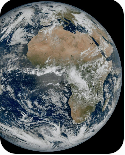

EcoOrbit AI — Earth Guardian
My top recommendationAn AI-powered dashboard that monitors Earth's environmental health using satellite observations and highlights areas that may need attention.
Features
- Track vegetation, surface temperature, and environmental changes.
- Visualize pollution-related indicators and land-cover changes.
- Display risk maps and historical trends.
- Generate understandable environmental reports.
Categories: AI & ML, Earth Science, Data Analysis, Satellites, Data Visualization, Pollution, Flora & Fauna.
Vegetation Index (NDVI)
Hover a cell for its value
Low
High
Historical Trend (2015–2025)
Areas That May Need Attention
Environmental Report
Choose a region and press Generate Report to get a plain-language summary of its environmental health.
Values shown are illustrative demo data generated for this dashboard, not live satellite measurements. Connect a real data source (e.g., Sentinel-2, MODIS, Sentinel-5P) to replace them.